BAPES FUTURE BAPES FUTURE 系列是位于迪拜国际金融中心的 Chaintech Labs Limited® 品牌的第二个 BAPESLAN™ 核心系列，也是链上排名第一的 Metavestor Clan。 所有 BAPES FUTURE 不可替代的
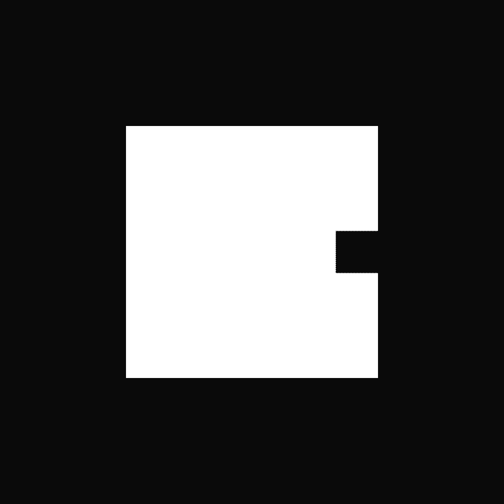 Bapes Parental Certificate BAPES 家长证书作为即将于 2022 年 6 月推出的 BAPES FUTURE 系列的第一 VIP 白名单令牌。BAPES 家长证书的持有者将首先以最低的价格铸造。 Bapes 父母证书 NFT - 常见问题（FA
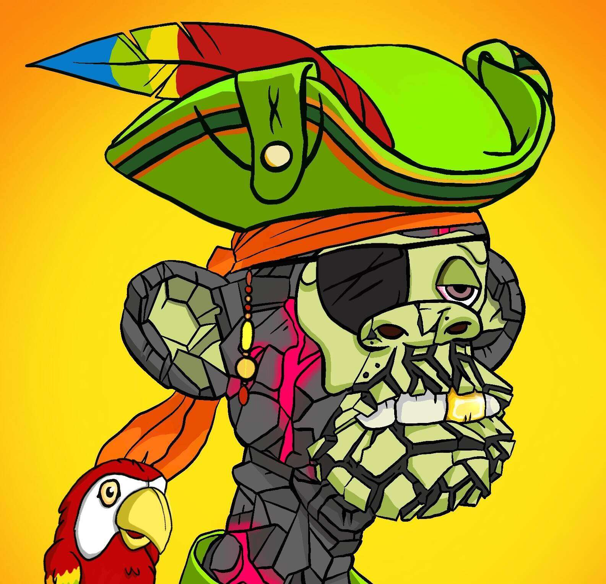 Barefoot Pirates 500名海盗保护赤脚岛的水域。 船员们非常受人尊敬，他们在岛上的居民中获得了半神地位。 所有 Barefoot Pirates 都是 MAYC #14118 的官方授权衍生产品，并授予持有者一系列特
Bloodshed Bears TokenGenerator 该系列现已完全迁移。 只能从以下新系列中购买新的官方系列Bears TokenGenerator 是一个字面价值 $BLD 印刷机，必须在 Bloodshed Bears Genesis TreeHuse 内质押才能产出。欢迎来到 Bloodshed 部署在以太
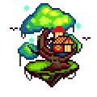 Bloodshed Bears TreeHouse Bloodshed Bears Genesis TreeHouse 是 Bloodshed Bears 的家，您可以通过在其中进行质押来增加产量。 欢迎来到部署在以太坊区块链上的 Bloodshed Bears NFT 游戏。BloodShed Bears 游戏将 P2E、风险、可
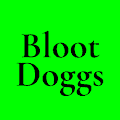 Bloot Doggs 准备好带着你的 Bloot Doggs 去 Metaverse。 每个独特的随机 Bloot Dogg 都有一个名称、品种和统计数据，用于 ❤️HEALTH ⚔️ATTACK 🛡DEFENSE
BLU Blox BLU Blox 是可爱而强大的长方体，具有平均冲击力。 这些可爱的人物由 BossLogic 设计，将在他们不断发展的 Multiverse 中提供游戏内访问和实用程序。 BLU Blox NFT - 常见问题（FAQ）
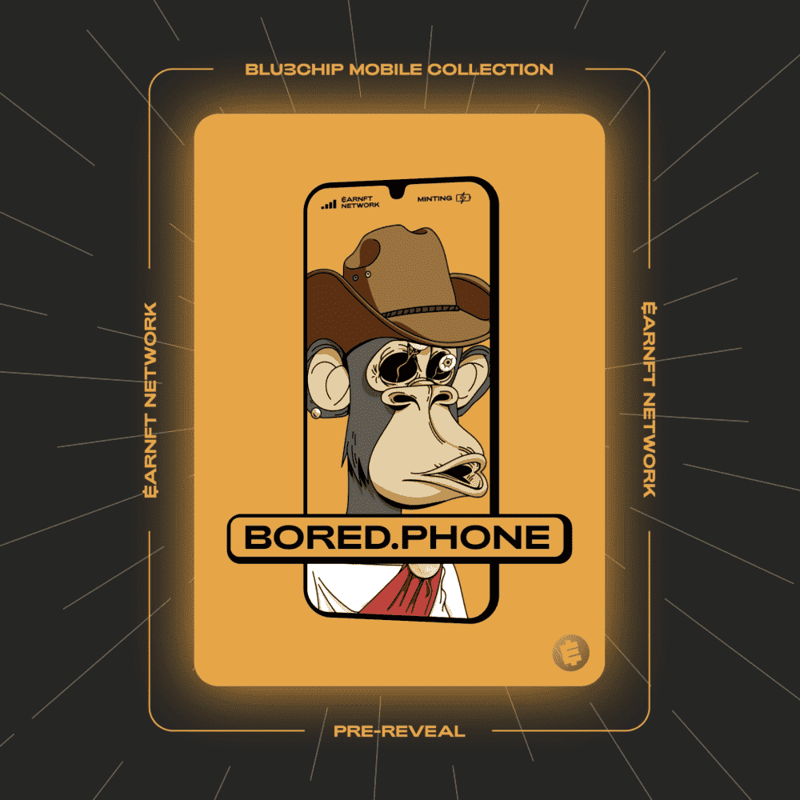 BLU3CHIP Mobile Collection By EARNFT NETWORK Play-to-Earn 奖励的未来 EARNFT NETWORK 为 Web2 平台启用游戏化 Web3 奖励。 $EARNFT 是一种通用奖励货币，由数百万每日 Web2 用户的时间、数据和注意力支持。 WEB3 奖励资产 神秘盒子改变游戏规则！
BlueChips BlueChips NFT - 常见问题（FAQ） ▶ 什么是蓝筹股？ BlueChips 是一个 NFT（不可替代代币）集合。 存储在区块链上的数字艺术品集合。 ▶ 有多少 BlueChips 代币？ 总共有 100 个 BlueChips NF
Blues NFT 有了薄荷收入，我们将每周收购蓝筹项目。 从 Neo Tokyo 和 CyberKongz 开始，我们将收购其他令人惊叹的项目，例如 Kaiju Kingz、Nanopass 和许多其他项目……一些
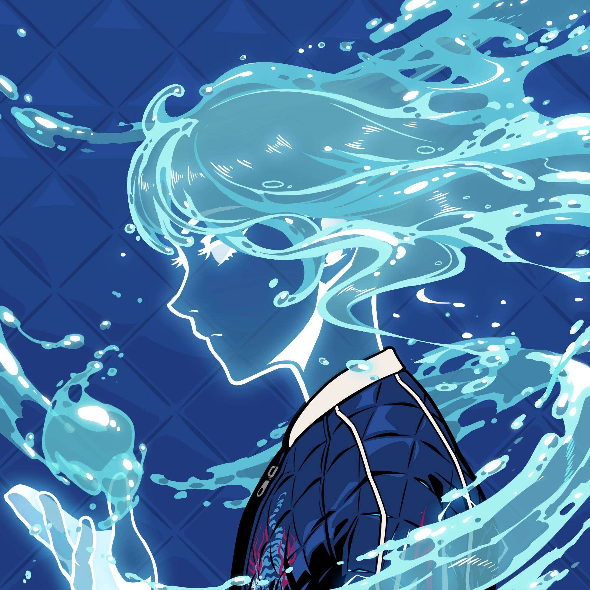 BlueZuki 由于没有版权，该收藏没有税收。Azuki 官方的艺术作品。 NFT 所代表的权益是 Battle 的动作事件。NFT stats 为您提供有关 NFT 空间的最新信息。 如果您想找到最好
Blvck Genesis Blvck Genesis 是生活在以太坊区块链上的 9,999 个 Blvck 头像 NFT 的集合。 拥有数百种艺术元素、高级时尚特质和单色美学，每幅图形均由法国设计师兼全球生活方式品牌 Blvck Paris 创始
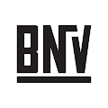 BNV Fashion BNV 时尚 NFT 是与众多受人尊敬的时尚品牌、艺术家和知名人士合作制作的。 我们的 NFT 带有品牌体验，一旦您在 BNV.ME 拥有帐户，这些体验就会解锁。收藏和掉落代表了
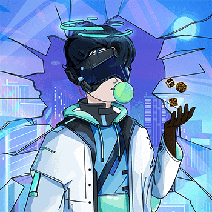 BoardGamers: Genesis Players BoardGamers 是一个用于 NFT 服务器的 Play-To-Earn 游戏平台。 BoardGamers游戏平台以简单易懂的游戏为特色，5分钟或更短的时间即可完成，玩起来非常有趣！ BoardGamers 平
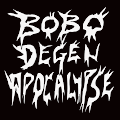 BOBO DEGEN APOCALYPSE 突发新闻：BOBO DEGEN 天启已经开始。 10,000 只熊陪伴你直到最后……天哪，我们都会死NFT stats 为您提供有关 NFT 空间的最新信息。 如果您想找到最好的 NFT 购买、即
Bobu, the Bean Farmer Bobu Tokens 是 azuki.com 为您带来的去中心化 IP 实验。 Bobu（Azuki #40）是一位诚实的豆农，将成为 Azuki 社区的一员。 Bobu 代币是一种参与去中心化角色 IP 治理实验的
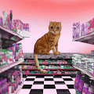 Bodega Cat Club Bodega Cat Club 是由 30 个独特的 NFT 组成的集合，这些 NFT 存在于以太坊区块链上。 您的 Bodega Cat 兼作您的 Bodega Cat Club 会员卡，让您在 bodega.co 和 DTC 世界上享受仅限会员的福利：Tier 3
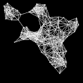 BOIDS NFT 欢迎来到 BOIDS，这是 NFT 对涌现的致敬。 BOIDS 是以太坊区块链上 2000 个算法生成的 NFT 的集合。 具有不同的颜色、特征和运动模式，所有 BOIDS 都是独一无二的。BO
Boki Teens NFT 我们永远年轻！！！ 7.777 Boki 青少年结合了最大的特征！ Mint 2 免费或获取并支持每个 0.003 ETH（每个钱包最多 10 个） Boki Teens NFT NFT - 常见问题（FAQ） ▶ 什么是 Boki Teens N
Bold and Brash Club 持有的原始铸币者获得额外奖励，敬请期待。10000 个 Bold and Brash NFT 的集合 PREMINT 已售罄发现顶级 NFT 项目和最新的 NFT 下降根据这些见解，做出明智的决定购买或铸造
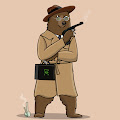 Bond Bears 126 只绝对动物园的贝拉正在执行一项职业任务 债券熊 NFT - 常见问题（FAQ） ▶ 什么是债券熊？ Bond Bears 是一个 NFT（不可替代代币）系列。 存储在区块链上的数
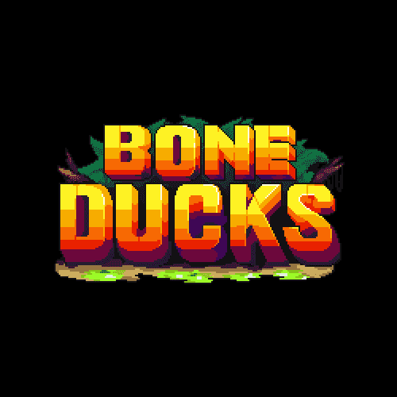 Bone Ducks 官方骨鸭系列。 在清除了地球上几乎所有生命的核灾难中幸存下来后，6555 只骨鸭子在元宇宙中一个被遗弃的小岛上找到了避难所。 没有路线图。 Bone Ducks NFT -
BoneHeadz Official BoneHeadz 是以太坊区块链上 5,000 个免费铸造和升级的 NFT 的集合。 每个 BoneHead 都是免费铸造的，并允许进入古墓袭击。 持有者支付少量费用来突袭坟墓，收集战利品并升级他们
Boner Kevin Boner Kevin 是一个 PFP 集合，包含 5000 个独特的 NFT，它们生活在以太坊区块链的野草上。 凯文整天。NFT stats 为您提供有关 NFT 空间的最新信息。 如果您想找到最好的 NFT
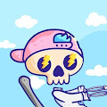 Boners NFT Boners 是位于以太坊区块链上的 6969 个独特 NFT 的集合。 Boners 的灵感来自 Tasty Bone 和 Mfers。 快来和我们一起感受吧！Boners 是生活在以太坊区块链上的 6969 个独特 nft
Bones & Bananas Bones & Bananas 是 10,000 个独特的、以编程方式生成的 Banana NFT 的集合，它们存在于以太坊区块链上！ 这是有史以来第一个非关联的、免费的、努力的、以社区为中心的、多价的
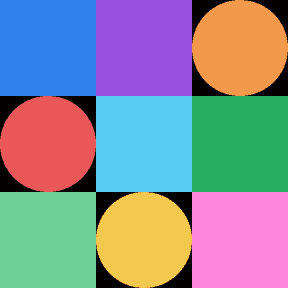 bonhomme.lol Bonhomme 是一组生成的链上 3x3 网格，代表您的钱包地址。 每个钱包只有一个。 永远免费。 2020 - 2022Full Stack & Technical Lead – Everpress 链接至 Full Stack & Technical Lead – Everpress 带领一个由 5 名工程师组成的团队
Bonito Catito NFT 4681 只收养了鲣鱼小猫。NFT stats 为您提供有关 NFT 空间的最新信息。 如果您想找到最好的 NFT 购买、即将推出的 NFT 项目、最昂贵的 NFT 是什么——我们将为您提供您需
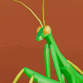 Bonsai by ZENFT 以太坊上 8888 个独特、美丽的盆景 NFT 谦逊地设计用于舒缓和镇静采用盆景授予 Zenft Garden Society 会员资格您拥有盆景的商业权利每棵树都附带：AR/VR 模型艺术图像和动
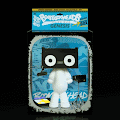 BOOMBOXHEADS Boomboxheads Collectibles 是密码艺术家 Godfrey Meyer III 的限量版数字收藏品。 Boomboxheads 在以太坊区块链上作为不可替代令牌 (NFT) 铸造。 每个 Collectible NFT 都经过加密签名和编号。 如果您是第一个 NFT 收藏家，您
BOOMGALA_Official BOOMGALA 是一个在社区基础上运行的原创项目，通过元界的价值结构连接起来。 BOOMGALA_官方 NFT - 常见问题（FAQ） ▶ 什么是 BOOMGALA_Off
Bored Ape Yacht Club Bored Ape 游艇俱乐部是 10,000 个独特的 Bored Ape NFT 的集合——生活在以太坊区块链上的独特数字收藏品。 您的 Bored Ape 可兼作您的 Yacht Club 会员卡，并授予会员专属福利，其中第一个
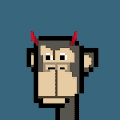 Bored Apes Punk Club Bored Ape Punks 是著名的 BAYC 和 Cryptopunks 的组合，但更好。 24x24 格式，类似于 Cryptopunk，具有来自 BAYC 的特征。NFT stats 为您提供有关 NFT 空间的最新信息。 如果您想找到
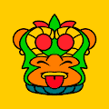 Bored Aztec Apes GutterVerse 已经渗透到阿兹特克人，并正在与 OG 争夺头把交椅。 将不得不为保住自己的位置而战。这两个系列将在不和谐中相互竞争，因此请加入以随时了解情况。本网
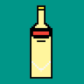 Bored Beer Bottle Club 世界上最好的啤酒🍺 正在元宇宙中酿造，为所有的啤酒爱好者提供.. 来制作你的啤酒！ B3C 将是一个以社区为中心的俱乐部，致力于保存我们对某些精酿啤酒因
Bored Bones Genesis Genesis mint500 无聊骨头 0.1 ETH |世界标准时间 4 月 22 日晚上 10 点。售罄后 24-48 小时显示。 CharityBored Bones 1/1 慈善拍卖。 代币销售 48 小时后，BONE$ 代币开始生成。 BONE$ MarketplaceBONE$ Marketplace 上线，包括
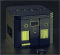 Bored Box - Genesis Bored Box 适合喜欢电子游戏的忙碌人士，他们宁愿花时间玩出色的游戏也不愿去寻找它们。我们相信玩家应该拥有自己的游戏内资产，我们利用与最好的区块链工作
Bored Breakfast Club Bored Breakfast Club 由 5,000 个独特的早餐场景组成，以 NFT 形式存在于以太坊区块链上。 他们还授予您使用独家咖啡俱乐部的权限，该俱乐部从第三波烘焙商 Yes Plz 那里免费运送美
Bored Brothers 无聊兄弟 NFT - 常见问题（FAQ） ▶ 什么是无聊兄弟？ Bored Brothers 是一个 NFT（不可替代代币）集合。存储在区块链上的数字艺术品集合。 ▶ 有多少无聊兄弟代币？
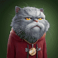 Bored Cat Origins Bored Cat 是以太坊区块链上的历史收藏。 这是第一个进入太空的 3D PFP NFT 集合。 每个无聊的猫持有者都会空投一把传送枪，只能使用一次来打开一个时空传送门。 它将
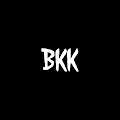 Bored Koda Klub 9,854 个小生物！ 独特的 NFT 代币，图像可能受到现有艺术的启发！但与任何其他项目无关！ 我们是无聊的柯达俱乐部！！ 来访问我们的推特吧！ 无聊的 Koda Klub NFT - 常见
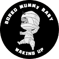 Bored Mummy Baby Waking Up BMWU (BMB)欢迎来到 Bored Mummy Baby NFTs！Bored Mummy Waking Up 的系列。 一个专业运营的社区驱动的 NFT 项目，在多个 Metaverse 土地上开发游戏和社交体验。这些非常有趣的
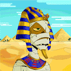 Bored Mummy Waking Up 一个非常活跃和友好的社区，在线游戏，赠品，3D 头像，沙盒世界，每周活动和未来路线图！欢迎来到无聊的木乃伊醒来！ 一个专业运营的社区驱动的 NFT 项目